정보통신기사(구) (2004-09-05 기출문제)
1과목: 디지털 전자회로
1. 다음 회로의 출력전류 Ic의 안정에 대한 설명 중 옳지 않은 것은?
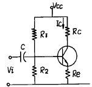
- Ie를 크게 해치지 않는 범위내에서 Re가 크면 클수록 좋다.
- 출력파형이 크게 일그러지지 않는 범위내에서 β 가 크면 클수록 좋다.
- 게르마늄 트랜지스터에서 Ico가 Ic의 안정에 가장 큰 영향을 준다.
- Rc는 Ic의 안정에 큰 영향을 준다.
(정답률: 알수없음)

2. 주파수 변조 방식의 특징으로서 거리가 먼 것은?
- 중간 주파수 증폭단의 이득을 작게 해야 한다.
- 점유 주파수 대역폭이 진폭변조 보다 크다.
- 주파수편이를 크게하면 점유 주파수대역폭이 커진다.
- FM방식이 AM방식에 비하여 잡음이 비교적 적다.
(정답률: 알수없음)
3. 다음 병렬공진회로에서 공진 주파수 fo을 구하는 식은?
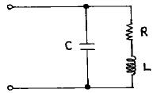
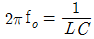
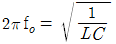
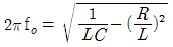
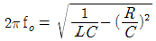
(정답률: 알수없음)
4. 그림과 같이 결선된 논리회로의 논리식은?
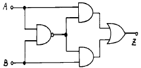
- Z = (A+B)A·B
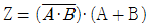
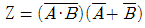
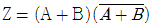
(정답률: 알수없음)
5. 그림과 같은 P - MOS 게이트 기능을 나타내는 논리식은? (단, 부논리이다.)
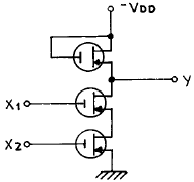
- Y = X1 + X2
- Y = X1 · X2
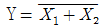
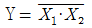
(정답률: 알수없음)
6. 비동기식 모드(mode)-13 계수기를 만들려면 최소한 몇 개의 플립플롭이 필요한가?
- 13
- 7
- 4
- 2
(정답률: 알수없음)
7. 그림과 같은 연산증폭기 회로에서 출력은? (단, 위상은 무시한다.)
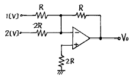
- -1[V]
- -2[V]
- -3[V]
- -4[V]
(정답률: 알수없음)
8. 다음 연산증폭기를 사용한 회로의 출력파형은?
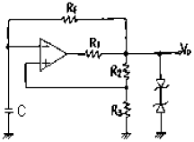
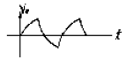
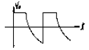
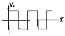
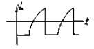
(정답률: 알수없음)
9. J-K 플립플롭을 그림과 같이 결선하고 클럭펄스가 인가될 때마다 출력 Q의 동작상태는?
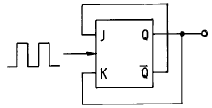
- Toggle
- Reset
- Set
- Race현상
(정답률: 알수없음)
10. 펄스진폭변조(PAM)에 해당되는 설명은?
- 원신호(原信號)의 표본점(sampling point)에서 높이를 몇개의 펄스 유무조합으로 표현한다.
- 각 펄스의 위치가 시간적으로 원신호에 따라서 전후로 이동한다.
- 각 펄스의 폭이 원신호의 높이에 따라 변화한다.
- 각 표본 펄스의 높이가 원신호의 높이에 비례한다.
(정답률: 알수없음)
11. 연산증폭기의 특성을 규정하는 파라메타가 아닌 것은?
- 동상 신호 제거율(CMRR)
- 이득ㆍ대역적(GainㆍBandwidth Product)
- 팬 아웃(Fan out)
- 입력 옵셋 전압(Input offset voltage)
(정답률: 알수없음)
12.
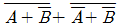
의 논리식을 간단히 정리하면?- A
- B
- A + B
- A · B
(정답률: 알수없음)
13. CR 발진기의 설명으로 가장 적합한 것은?
- 부성저항을 이용한 발진기이다.
- 압전기 효과를 이용한 발진기이다.
- C 및 R로서 부궤환에 의하여 발진한다.
- C 및 R로서 정궤환에 의하여 발진한다.
(정답률: 알수없음)
14. 전원회로의 특성과 관계가 없는 것은?
- 리플포함률
- 부하특성
- 전원저항 변동율
- 전압 맥동율
(정답률: 알수없음)
15. 회로의 출력 임피던스는 약 얼마인가? (단, 드레인 저항 Rd = 10[㏀], μ = 50 이라고 함)
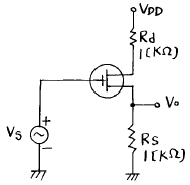
- 370[Ω]
- 216[Ω]
- 75[Ω]
- 50[Ω]
(정답률: 알수없음)
16. 연산증폭기를 이용한 아날로그컴퓨터(analog computer)의 구성요소로서 부적당한 것은?
- 적분기(integrator)
- 미분기(differentiator)
- 합산기(summing amplifier)
- 비반전증폭기(non-inverting amplifier)
(정답률: 알수없음)
17. 그림의 회로에서 입력전압 Vi와 출력전압 Vo의 관계곡선은?
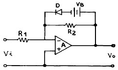
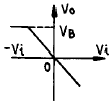
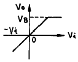
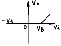
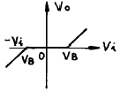
(정답률: 알수없음)
18. 적분회로로 사용할 수 있는 회로는?
- 저역통과 RC회로
- 고역통과 RC회로
- 대역통과 RC회로
- 대역소거 RC회로
(정답률: 알수없음)
19. 전원전압 Vcc = 15[V]를 써서 최대출력 PO(max) = 14[W]의 B급 전력 증폭회로를 설계하려면 부하저항치는 약 얼마로 하면 좋은가?
- 32[Ω]
- 16[Ω]
- 8[Ω]
- 4[Ω]
(정답률: 알수없음)
20. 그림은 무슨 Flip-Flop 회로인가?
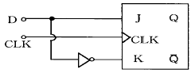
- M-S FF
- S-R FF
- CLK FF
- D FF
(정답률: 알수없음)
2과목: 정보통신 시스템
21. 통신교환기술에 관한 설명중 잘못된 것은?
- 패킷교환방식은 데이터교환이 많은 경우에 유리하다
- 데이터그램 패킷교환방식은 융통성이 요구되거나, 메시지가 짧은 경우에 유리하다.
- 대화형 통신에 가장 적합한 교환방식은 메시지교환 방식이다.
- 메시지교환방식은 대화형 통신에 부적절하다.
(정답률: 알수없음)
22. 사용하는 네트워크의 정량적인 평가척도는 어느 것인가?
- 노드(Node)수
- 응답시간
- 통신장비
- 통신소프트웨어
(정답률: 알수없음)
23. 단말기와 변복조기의 연결 콘넥터(25 PIN)의 설명 중 틀린 것은?
- 주로 데이터 속도가 20[Kbps] 이하이다.
- 동기 및 비동기식 접속에서 사용된다.
- ITU-T 권고사항 V.24/V.28에 준한다.
- 아날로그 신호를 연결하는 콘넥터이다.
(정답률: 알수없음)
24. PCM 방식에 있어 양자화 잡음 감소를 위한 방안으로서 적절하지 않은 것은?
- 샘플링 주파수를 증가시킨다.
- 압신기를 사용한다.
- 적응(ADAPTIVE)양자화기를 사용한다.
- 에러 정정 부호를 사용한다.
(정답률: 알수없음)
25. ISDN에 의해 제공되는 서비스 특성이 아닌 것은?
- PCM 전송에 의한 고품질의 음성서비스
- 저속의 비음성(non-voice) 서비스
- 여러 종류의 서비스 집적화
- D채널 신호체계에 의한 링크설정시간과 다양한 보조기능 제공
(정답률: 알수없음)
26. IP 주소(절대 주소)는 숫자로만 구성되어 있기 때문에 실제로 사용자가 이용하거나 기억하는데 어려움이 있다. 따라서 IP 주소대신 쉽게 기억할 수 있고 이용도 쉽게 할수 있도록 부여한 이름은?
- TCP/IP
- DNS
- ACK
- COM
(정답률: 알수없음)
27. 다음중 ISDN에 가장 부합되는 신호방식은?
- NO.5 신호방식
- NO.6 공통선 신호방식
- R2 신호방식
- NO.7 공통선 신호방식
(정답률: 알수없음)
28. 다음중 통계적 시차분할 다중화(STATDM)의 장점이 될 수 없는 것은?
- 많은 사용자를 수용 할 수 있다.
- 소통량이 과도하게 몰리는 경우 대기지연이 일어날 가능성이 높다.
- 회선 이용률이 높다.
- 시스템 효율이 높다.
(정답률: 알수없음)
29. 다음 부호중 오류정정이 가능한 부호는?
- 패리티검사부호
- 일정마크부호
- 군계수체크 부호
- 해밍부호
(정답률: 알수없음)
30. ISO(International Standardization Organization)에서 정의한 통신망 관리의 범주에 속하지 않는 것은?
- 운용관리(Operations Management)
- 고장관리(Fault Management)
- 성능관리(Performance Management)
- 회계관리(Accounting Management)
(정답률: 알수없음)
31. OSI 7-Layer중 노드간에 비트(bits)를 주고 받기 위한 기구적, 전기적인 사양을 정의한 Layer는?
- Physical Layer
- Data Link Layer
- Network Layer
- Transport Layer
(정답률: 알수없음)
32. 데이터 네트워크의 도입설치시 고려할 사항과 가장 관련이 적은 것은?
- 표준안에 따른 제품의 선정
- 네트워크의 변동에 대한 유연성
- 고가 또는 염가제품의 선정
- 장치 및 S/W의 추가 또는 제거의 용이성
(정답률: 알수없음)
33. A 도시와 B 도시 사이에 회선사용능률 80% 로서 6.4 어랑(Erlang)을 소통시키고자 한다. 이 경우 시외전화회선이 몇 회선 필요한가?
- 4회선
- 8회선
- 12회선
- 16회선
(정답률: 알수없음)
34. 정보통신 시스템의 구성요소중 데이타회선 종단장치(DCE)의 기능으로 볼 수 없는 것은?
- 송.수신신호의 변환
- 전송신호의 동기제어
- 전송오류의 검출과 정정
- 정보의 가공, 처리, 보관기능
(정답률: 알수없음)
35. ITU-T 권고안 중 패킷교환용 공중 데이터 네트워크의 상호 접속을 위한 노드사이의 표준 프로토콜(Protocol)은?
- X.3
- X.25
- X.28
- X.75
(정답률: 알수없음)
36. 라우터(Router)는 OSI 7 계층 모델의 어느 계층까지의 기능을 수행하는가?
- 물리계층
- 데이터 링크 계층
- 네트워크 계층
- 트랜스포트 계층
(정답률: 알수없음)
37. 각 데이타 교환방법에 대하여 적합한 대상 트래픽으로 볼 수 없는 것은?
- 회선교환 - 비동기식 트래픽
- 패킷교환 - 버스티(bursty)한 트래픽
- 가상회선 - 상대적으로 긴 시간 트래픽
- 데이타그램 - 상대적으로 짧은 시간 트래픽
(정답률: 알수없음)
38. PCM-24 방식에 있어서 표본화 주파수가 8[KHz]라고 하면 1 표본화의 주기(T)는?
- T = 125 [μ s]
- T = 240 [μ s]
- T = 376 [μ s]
- T = 538 [μ s]
(정답률: 알수없음)
39. ITU-T의 V시리즈는 무엇을 대상으로 하는 표준안인가?
- 전화망을 통한 데이타통신
- 전송, 신호방식에 관한 데이타통신
- 망간 호접속에 관한 데이타통신
- 메시지 처리에 관한 데이타통신
(정답률: 알수없음)
40. 데이터 교환방식 중 망의 과부하로 인하여 전송지연시간이 길어지고 포화상태에 이르면 전송이 불가능한 것은?
- 메시지교환
- 음성을 위한 교환회선
- 패킷교환
- 데이터를 위한 교환회선
(정답률: 알수없음)
3과목: 정보통신 기기
41. 전자교환기에서 사용되고 있는 교환국용 프로그램이 아닌것은?
- 실행 프로그램
- 호처리 프로그램
- 서브루틴 프로그램
- 보수운용 프로그램
(정답률: 알수없음)
42. 통신위성에서 행성간 비행하는 우주선과 지상기지 사이의 데이터 전송에 필요한 전력은 다음중 어떤 비례식으로 늘려 주어야 하는가?
- 거리에 비례
- 거리의 2승에 비례
- 거리의 3승에 비례
- 거리에 반비례
(정답률: 알수없음)
43. 팩스(FAX)의 부호화 방식으로 사용되지 않는 것은?
- MH(Modified Huffman) 방식
- MR(Modified Read) 방식
- MMH(Modified MH) 방식
- MMR(Modified MR) 방식
(정답률: 알수없음)
44. 그래픽 단말기의 화면 출력을 사용하는 방법 중 모든 픽셀에 액세스 가능한 네온 전구의 배열을 사용한 화면표시 장치의 일종인 방식은 무엇인가?
- 스토리지 튜브
- 레스터 리프레쉬
- 랜덤스캔방식
- 플라즈마방식
(정답률: 40%)
45. 다음에서 전송 제어 장치의 기능이 아닌 것은?
- 정보의 직·병렬 변환기능
- 메시지 분석기능
- 문자의 조립과 분해기능
- 입·출력 제어 및 감시 기능
(정답률: 알수없음)
46. 위성통신의 중계기로서 상위링크 신호를 수신하여 하위링크 주파수로 변환시켜 주는 장치는?
- 트랜스 폰더
- 텔레코멘드 장치
- 추미 장치
- 제어 인터페이스 장치
(정답률: 알수없음)
47. 디지털 데이터의 형태로 전송할 때 필요한 회선종단장치는?
- 자동응답기
- 호출기
- 디지털서비스유니트
- 모뎀
(정답률: 알수없음)
48. 통신회선을 직접 보유하거나 통신사업자의 회선을 임차 또는 이용하여 단순한 전송기능 이상에 해당하는 정보의 축적, 가공, 변환처리 등을 하는 복합적인 정보통신 서비스는 무엇인가?
- Videotex
- VAN
- ISDN
- LAN
(정답률: 알수없음)
49. ADSL에서 반향(Echo)이 발생하는 주요 원인이 아닌 것은?
- 브리지 탭(Bridge Tab)
- 이종 심선 접속(Guage Change)
- 심볼간 간섭(Inter-Symbol Interface)의 최소화
- 하이브리드 임피던스와 선로 임피던스의 부정합
(정답률: 알수없음)
50. 전자식 전화기의 특수기능 보턴의 주파수에 대하여 맞는 주파수는?
- * = 941[㎐] + 1209[㎐]
- # = 852[㎐] + 1477[㎐]
- * = 941[㎐] + 1336[㎐]
- # = 852[㎐] + 1633[㎐]
(정답률: 알수없음)
51. 다음중 시분할식 교환기가 아닌 것은?
- M10CN
- AXE - 10
- TDX -1A
- TDX -10A
(정답률: 알수없음)
52. TV전파의 빈틈을 이용하여 뉴스, 일기, 교통정보 등의 문자와 도형신호를 TV영상신호와 동시에 방송하여 수신자로 하여금 원하는 정보를 선택하여 TV화면으로 볼 수 있는 것은?
- 비디오텍스
- 텔리텍스트
- 텔리텍스
- 팩시밀리
(정답률: 알수없음)
53. FM방식에서 변조신호의 높은 주파수 대를 특히 강하게 변조하여 SN비의 저하를 방지하는 회로는?
- IDC 회로
- AFC 회로
- De-emphasis
- Pre-emphasis
(정답률: 알수없음)
54. 다음중 무선송수신기에 사용되는 주파수합성기(synthesizer)의 기본적인 회로는?
- 혼합기
- 주파수분배기
- PLL
- 평형변조기
(정답률: 알수없음)
55. 뉴미디어 기기의 파급효과에 대한 설명중 틀린 것은?
- 재택근무로 교통체증이 해소된다.
- 복합시스템으로 사용이 불편하게 된다.
- 컴퓨터와 뉴미디어가 경영조직의 일부가 된다.
- 필요한 정보를 장소에 제한없이 얻을 수 있다.
(정답률: 80%)
56. 통신 제어 장치의 데이터처리 방식 중 블록을 조립하고 여러 블록을 모아 SOH부터 ETX까지 하나의 메시지를 만들어 전송하는 방식은?
- 비트 버퍼 방식
- 문자 버퍼 방식
- 메시지 버퍼 방식
- 블록 버퍼 방식
(정답률: 알수없음)
57. 다음 중 집중화기(concentrator)에 대한 설명이 잘못된것은?
- 동적인 방법으로 시간폭을 할당한다.
- 데이터 형태를 변환시킬 수 있다.
- 고속선로를 저속선로로 집중한다.
- 데이터 압축전송이 가능하다.
(정답률: 알수없음)
58. 데이타전송을 위한 변복조에서 심벌간의 간섭, 다경로확산, 첨가잡음 및 페이딩에 의한 왜곡이 생겨서 수신되는 경우가 있으므로 이를 방지하기 위한 것은?
- 대역여파기
- 디스크림블러
- 등화기
- 채널디코더
(정답률: 알수없음)
59. 변복조기(Modem)에서 데이타의 패턴을 랜덤하게 하여 수신측에서 동기를 잃지 않도록 하며, 신호의 스펙트럼이 채널의 대역폭내에서 가능한 넓게 분포하도록 하여 수신측에서 등화기가 최적의 상태를 갖도록 해주는 것은?
- 채널 엔코더
- 채널 디코더
- 프로토콜 제어기
- 스크램블러
(정답률: 알수없음)
60. CATV의 기본구조중 헤드엔드에 속하지 않는 것은?
- 수신안테나
- 주파수 변환기
- 변조, 복조기
- 중계증폭기
(정답률: 알수없음)
4과목: 정보전송 공학
61. 다음에서 HDLC의 프레임이 올바른 것은?
- flag-제어-주소-데이터-FCS-flag
- flag-주소-제어-데이터-FCS-flag
- flag-제어-주소-데이터-SOH-flag
- flag-ETX-주소-데이터-FCS-flag
(정답률: 34%)
62. 부하임피던스가 600[Ω]인 회로에 특성임피던스가 75[Ω]인 패드(PAD)를 연결시키면, 이때 정재파비(S) 및 반사계수(m)는 대략 얼마인가?
- S = 0.78, m = 8.09
- S = 1.28, m = 6.32
- S = 6.32, m = 1.28
- S = 8.09, m = 0.78
(정답률: 알수없음)
63. 다음의 전송제어문자중 긍정응답을 나타내는 것은?
- SOH
- NAK
- ACK
- ENQ
(정답률: 알수없음)
64. 다음 중 동기식 전송의 특징이 아닌 것은?
- 전송성능이 좋고 대역이 좁다.
- 수신측 단말기에는 buffer가 있다.
- 문자와 문자사이에 일정치 않은 휴지기간이 있다.
- 중, 고속 데이터 전송에 사용된다.
(정답률: 알수없음)
65. 다음중 전송제어 절차를 순서에 맞게 기술한 것은?
- 회선접속 → 데이타링크 확립 → 정보전송 → 데이터 링크 해제 → 회선절단
- 회선접속 → 데이타링크 해제 → 정보전송 → 데이터 링크 확립 → 회선절단
- 데이타링크 확립 → 회선접속 → 정보전송 → 회선절단 → 데이터 링크 해제
- 데이타링크 확립 → 정보전송 → 회선접속 → 회선절단 → 데이터 링크 해제
(정답률: 알수없음)
66. 2개의 수신안테나를 적당한 간격으로 설치하여 2개의 수신입력 중에 양질의 신호를 수신하는 페이딩 보상법의 이름은?
- 주파수 다이버시티
- 루트 다이버시티
- 간섭 다이버시티
- 공간 다이버시티
(정답률: 알수없음)
67. 다음중 델타(delta)변조 방식과 관계가 없는 것은?
- 전송정보는 디지탈 형태를 갖는다.
- 표본화 순간의 값을 바로 직전의 표본화 순간의 값과 비교한다.
- 소규모 회선에서 보다 경제성이 있다.
- FM 변조방식의 일종이다.
(정답률: 알수없음)
68. 데이타 신호속도 2400[bps]인 모뎀에서 4상 PSK로 변조한다. 이때 변조속도는 얼마인가?
- 4800[bps]
- 2400[baud]
- 1200[bps]
- 1200[baud]
(정답률: 알수없음)
69. 채널의 대역폭이 1000[㎐]이고 채널에서의 출력의 신호대 잡음비가 31 일 때 대역통과 채널의 통신 용량을 샤논의 정리에 의해서 계산하면?
- 4000 bit/s
- 5000 bit/s
- 6000 bit/s
- 30000 bit/s
(정답률: 알수없음)
70. 다음 설명의 변조 방식은 무엇인가?
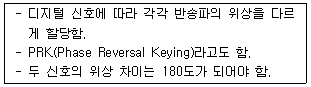
- QAM(직교진폭변조)
- FSK(주파수 변조)
- ASK(진폭변조)
- BPSK(Binary phase shift keying) 위성변조
(정답률: 알수없음)
71. 다음의 손실 중 광섬유 케이블에 한해 야기되는 손실이 아닌 것은?
- 유도 손실
- 흡수 손실
- 산란 손실
- 마이크로밴딩 손실
(정답률: 알수없음)
72. 잡음의 종류 중 내부 잡음에 해당하지 않는 것은?
- 열잡음
- 트랜지스터 잡음
- 비선형 왜곡잡음
- 누화잡음
(정답률: 알수없음)
73. OSI 참조모델은 1계층에서 7계층까지로 구분할 수 있다. 윗 계층과 아래 계층 사이에 주고받는 데이터 단위를 무엇이라 하는가?
- SDU
- PDU
- PCI
- HEADER
(정답률: 알수없음)
74. 주파수 대역폭이 W로 제한된 연속시간 신호함수를 시간축에 따라 표본화할때 나이키스트 표본화율(Nyquist sampling rate) fc는?
- fc = W
- fc = W/2
- fc = 2W
- fc = 3W
(정답률: 알수없음)
75. 다음이 공통적으로 설명하는 기능은 무엇인가?
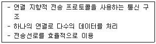
- 단편화와 재조립
- 오류제어
- 다중화
- 변복조
(정답률: 알수없음)
76. ADM에 대한 설명 중 잘못된 것은?
- 적응형 양자화를 수행한다.
- DM보다 양자화잡음 및 과부하잡음이 경감된다.
- 1비트 양자화를 수행한다.
- 양자화계단의 크기가 고정되어 있다.
(정답률: 알수없음)
77. 입력데이터 1은 +1과 -1로 반복하는 마크부호로 변형하고 입력데이터 0은 스페이스부호로 변형하는 부호방식으로 ISDN-S 인터페이스에 많이 사용되는 것은?
- NRZ-M 부호
- 2B1Q 부호
- Biphase 부호
- AMI 부호
(정답률: 알수없음)
78. 4개의 문자중 하나를 보내는 정보원이 있다.이때 각 문자의 확률이 각각 1/2,1/4,1/8,1/8일 경우 한 문자에 대한 엔트로피(bit/symbol)를 구하시오.
- 5/4
- 7/4
- 9/4
- 11/4
(정답률: 알수없음)
79. 디지털 신호의 펄스열을 그대로 또는 다른 형식의 디지털 펄스파형으로 변환시켜 전송하는 방식은?
- 베이스밴드 전송방식
- 반송대역 전송방식
- 광대역 전송방식
- 협대역 전송방식
(정답률: 알수없음)
80. 광섬유 접속시 모드변환이 일어나는 원인이 아닌 것은?
- 코아와 클래드의 경계에 요철이 있을때
- 축이 일치하지 않을때
- 광섬유의 마이크로밴딩이 없을때
- 접속 단면이 평행하지 않을때
(정답률: 알수없음)
5과목: 전자계산기일반 및 정보통신설비기준
81. 시스템의 효율을 높이기 위해 명령문을 처리하는데 있어서 병렬 처리하도록 하는 하드웨어는?
- 멀티 프로세싱
- 파이프 라인
- 직접 메모리 액세스
- 시스템 공유
(정답률: 알수없음)
82. 전기통신의 관장과 전기통신사업에 관한 설명으로 옳지 않은 것은?
- 전기통신은 공공복리의 증진에 이바지함을 목적으로 관리하고 운영되어야 한다.
- 전기통신사업은 기간통신사업과 별정통신사업, 부가통신사업으로 구분한다.
- 우리나라의 전기통신사업은 원칙적인 시장경쟁 원리를 도입하고 적정경쟁을 유도하고 있다.
- 전기통신기본법에 관한 사항은 정보통신부장관이 관장하고 전기통신사업법에 관한 사항은 한국통신이 관장한다.
(정답률: 알수없음)
83. 2진수의 1의 보수를 구하기 위해서 사용되는 게이트는?
- AND
- NOT
- OR
- EX-OR
(정답률: 알수없음)
84. 주소지정방식 중 기억장치에 최소 두번 접근해야 오퍼 랜드를 얻을 수 있는 것은?
- 직접주소지정방식
- 간접주소지정방식
- 상대주소지정방식
- 실제값주소지정방식
(정답률: 알수없음)
85. 8bits를 사용하여 부호와 절대치 표현방법으로 -13(10진수)을 올바르게 표현한 것은?
- 00001101
- 10001101
- 10000010
- 11010000
(정답률: 알수없음)
86. 단말장치의 전자파장해 방지기준 및 전자파장해로부터의 보호기준 등은 어느 법령이 정하는 바에 의하는가?
- 통신보안에 관한 법령
- 전기에 관한 법령
- 인체보건에 관한 법령
- 전파에 관한 법령
(정답률: 알수없음)
87. 정보통신공사업자가 아니어도 시공 할 수 있는 것은?
- 전송단국설비공사
- 구내전화선로설비공사
- 광통신시설공사
- 간이무선국설치공사
(정답률: 알수없음)
88. 10진수 14.25를 2진수로 변환하면?
- 1110.01
- 1111.01
- 1101.10
- 1010.01
(정답률: 알수없음)
89. 음량손실의 객관적 척도로서 전화망의 임의의 양단 사이에 있어서 입력신호에 대한 출력신호를 전기적 또는 음향적 손실의 가중평균으로 표시한 것은?
- 통화당량
- 라우드네스
- 음량정격
- 평형도
(정답률: 알수없음)
90. 전자계산기의 성능을 표시하는 단위는?
- BPS
- MIS
- MIPS
- TPS
(정답률: 알수없음)
91. 기억장치에 기억되어 있는 정보의 내용 또는 그의 일부에 의해서 기억되어 있는 위치에 접근하여 정보를 읽어내는 기억장치는?
- 가상기억장치
- 연상기억장치
- 캐쉬메모리
- 순차접근 기억장치
(정답률: 알수없음)
92. 전기통신기본법에서 정하는 주요 내용은?
- 전기통신에 관한 기본적인 사항
- 전기통신사업의 운영에 관한 사항
- 전기통신역무의 효율적인 제공 및 이용에 관한 사항
- 전기통신설비의 설계,공사,시공에 관한 사항
(정답률: 알수없음)
93. 정보화추진위원회의 심의 사항이 아닌 것은?
- 정보화 추진 기본계획 중 중요한 사항의 변경
- 초고속 정보통신 기반의 구축과 이용
- 정보화 촉진사업 추진의 조정
- 국가기간전산망의 운용 지침
(정답률: 알수없음)
94. 컴퓨터 운영체제에서 파일 시스템 관리 기법중 대기중인 작업 중에서 현재의 헤드 위치에서 가장 짧은 헤드 이동을 요청하는 작업을 판단하여 먼저 서비스 하는 스케줄링 기법은?
- FCFS
- SJF
- SSTF
- C-SCAN
(정답률: 알수없음)
95. 정보통신공사업자가 정보통신부장관의 인가를 받아 설립할 수 있는 정보통신공사협회의 목적이 아닌 것은?
- 품위의 유지
- 공사 견적의 효율
- 기술의 향상
- 공사업의 건전한 발전
(정답률: 알수없음)
96. 시스템 동작개시후 최초로 주기억장치에 프로그램을 load하는 것은?
- operating system
- bootstrap loader
- mapping operator
- editor
(정답률: 알수없음)
97. MICRO Computer System에서 중앙 처리 장치와 주변 장치사이에 통신을 수행하고 창구 역할을 수행하는 것은?
- Address Bus
- Memory Map
- System Clock
- I/O Port
(정답률: 알수없음)
98. 전기통신설비의 기술기준에서 정의하는 강전류전선은 몇[V] 이상의 전력을 송전.배전하는 전선을 말하는가?
- 220[V]
- 300[V]
- 600[V]
- 750[V]
(정답률: 알수없음)
99. 정보통신공사업법령에서 정하는 공사의 구분에 해당되지 않는 것은?
- 통신설비공사
- 교환설비공사
- 방송설비공사
- 정보설비공사
(정답률: 알수없음)
100. 전자서명 공인 인증기관으로 지정받을 수 없는 자는?
- 국가기관
- 지방자치단체
- 법인
- 외국인
(정답률: 알수없음)
- 출력전류 Ic는 다음과 같이 계산된다.
Ic = (Vcc - Vce) / Rc
- 따라서 Rc가 작으면 Ic는 커지고, Rc가 크면 Ic는 작아진다.
- 따라서 Rc의 값이 적절하지 않으면 Ic의 안정이 보장되지 않는다.
따라서 "Rc는 Ic의 안정에 큰 영향을 준다."는 옳은 설명이다.